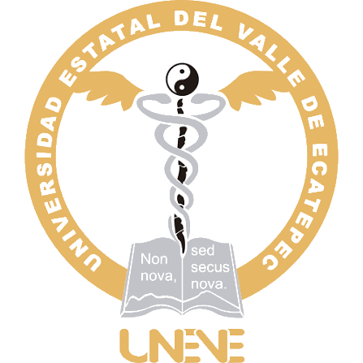
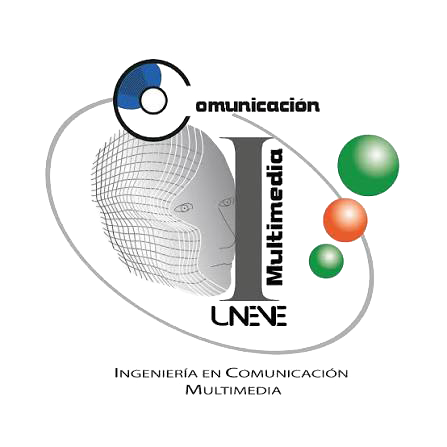

Bienvenidos, somos:
KnowBrain es una empresa enfocada en la creación de contenidos multimedia originales, que busca impulsar la creatividad, el aprendizaje y el desarrollo de nuevas ideas mediante conocimientos básicos y herramientas accesibles. Su objetivo es brindar apoyo a pequeños, medianos y grandes emprendedores, facilitándoles recursos que les permitan desarrollar sus proyectos, fortalecer sus habilidades y aprovechar nuevas oportunidades de crecimiento. A través de la innovación, el diseño y la comunicación visual, KnowBrain busca ofrecer información útil y creativa que contribuya al desarrollo personal y profesional de sus usuarios. Asimismo, promueve el aprendizaje de nuevas habilidades relacionadas con el diseño gráfico y editorial, la tecnología, los videojuegos, la fotografía y la ilustración, proporcionando contenidos que inspiran y motivan a las personas a explorar su potencial. De esta manera, KnowBrain busca convertirse en una herramienta de apoyo para quienes desean transformar sus ideas en proyectos, adquirir nuevos conocimientos y desarrollar sus capacidades creativas, contribuyendo al crecimiento de emprendedores y jóvenes interesados en innovar y construir su propio camino profesional.